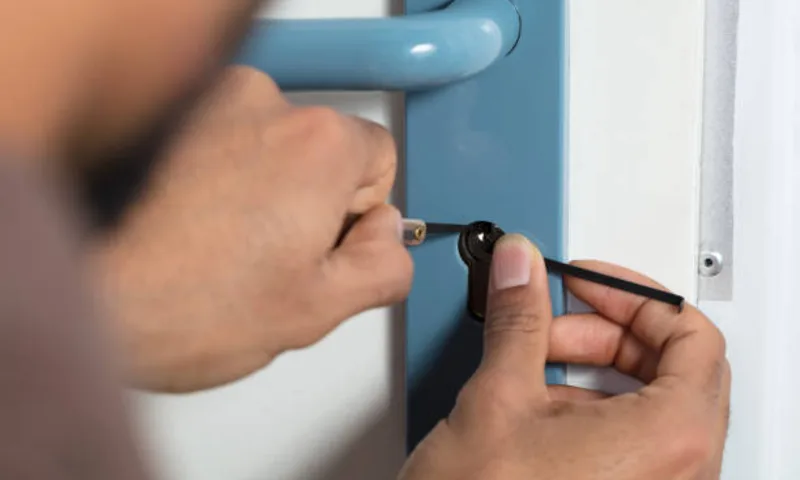
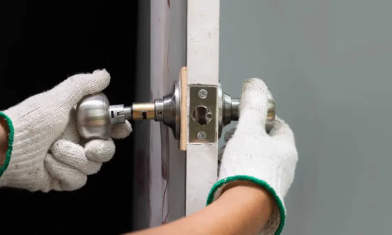

Ключ заедает или проворачивается с усилием
Чаще всего причина в износе секретной части, загрязнении механизма или смещении корпуса. Проводим диагностику и восстанавливаем корректный ход без лишней замены узлов.
Выполняем ремонт дверных замков на входных и межкомнатных дверях: от диагностики причины поломки до восстановления стабильной работы механизма. Стоимость согласовываем до начала работ.

Чаще всего причина в износе секретной части, загрязнении механизма или смещении корпуса. Проводим диагностику и восстанавливаем корректный ход без лишней замены узлов.
Если ригели не выходят полностью или клинят, проверяем геометрию двери, состояние ответной части и внутренний механизм, затем выполняем точную настройку и ремонт.
После перекоса двери, удара или попытки вскрытия замок может работать некорректно. Восстанавливаем посадку, меняем поврежденные элементы и проверяем надежность закрывания.
| Услуга | Работа | Детали | Итого |
|---|---|---|---|
| Диагностика и базовый ремонт замка | от 1 000 ₽ | по факту | от 1 000 ₽ |
| Ремонт замка с заменой личинки | от 1 300 ₽ | от 800 ₽ | от 2 100 ₽ |
| Ремонт замка входной двери после клина | от 1 500 ₽ | от 1 000 ₽ | от 2 500 ₽ |
Финальная стоимость зависит от модели замка, степени износа и необходимости замены отдельных деталей. Итог согласовываем до старта работ.
| Ситуация | Услуга | Ссылка |
|---|---|---|
| Проблема именно во входной двери и усиленном замке | Ремонт замка входной двери | Открыть страницу |
| Нужен ремонт в рамках сервиса мастерской | Мастерская по ремонту замков | Открыть страницу |
| Замок не подлежит ремонту и нужна замена | Замена дверных замков | Открыть страницу |
Эта страница про общий ремонт дверных замков. Узкий интент по входным дверям вынесен отдельно на страницу ремонт замка входной двери.
После диагностики называем точную цену. Дополнительные работы и детали согласовываем заранее, без постфактум-доначислений.
До завершения заявки проверяем ход ключа, работу ригелей и закрывание двери в нескольких циклах, чтобы исключить повторные заедания.
01
Ситуация: дверь открывалась только с сильным усилием. Решение: разобрали механизм, заменили изношенный узел и отрегулировали посадку. Результат: мягкий ход и стабильное закрывание.

02Ситуация: после сезонной усадки коробки ригели стали цеплять. Решение: восстановили геометрию посадки и настроили ответную часть. Результат: дверь закрывается без клина и стука.

03Ситуация: механизм работал нестабильно и периодически закусывал. Решение: выполнили ремонт с заменой изношенных деталей и регулировкой. Результат: надежная работа без полной замены корпуса.
Нет. Во многих случаях можно восстановить работу механизма ремонтом без полной замены корпуса. Решение принимаем после диагностики на месте.
Обычно от 30 до 90 минут, в зависимости от модели замка и причины неисправности.
Да, предоставляем гарантию на выполненные работы и установленные детали. Условия уточняем до начала ремонта.
Ремонт дверных замков в Санкт-Петербурге позволяет восстановить безопасность двери без затрат на полную замену механизма, если корпус и основные узлы подлежат восстановлению. На практике проблемы чаще связаны с износом секретной части, смещением ответной планки, загрязнением механизма или повреждением отдельных элементов.
Мы начинаем с диагностики: определяем причину неисправности, прогнозируем ресурс после ремонта и согласовываем стоимость. После работ проверяем замок в нескольких циклах открывания/закрывания, чтобы исключить повторный клин и нестабильную работу.
Если у вас узкая задача по входной двери, используйте страницу ремонт замка входной двери. Для комплексного сервисного обращения подходит мастерская по ремонту замков. Такое разделение помогает выбрать точную услугу без каннибализма между страницами.
| Ситуация | Что делаем | Средний срок |
|---|---|---|
| Ключ заедает и плохо проворачивается | Диагностика, ремонт механизма, настройка | 30-70 мин |
| Ригели клинят при закрывании | Коррекция геометрии и ответной части | 40-90 мин |
| Замок работает нестабильно после нагрузки | Ремонт с заменой изношенных узлов | 50-120 мин |